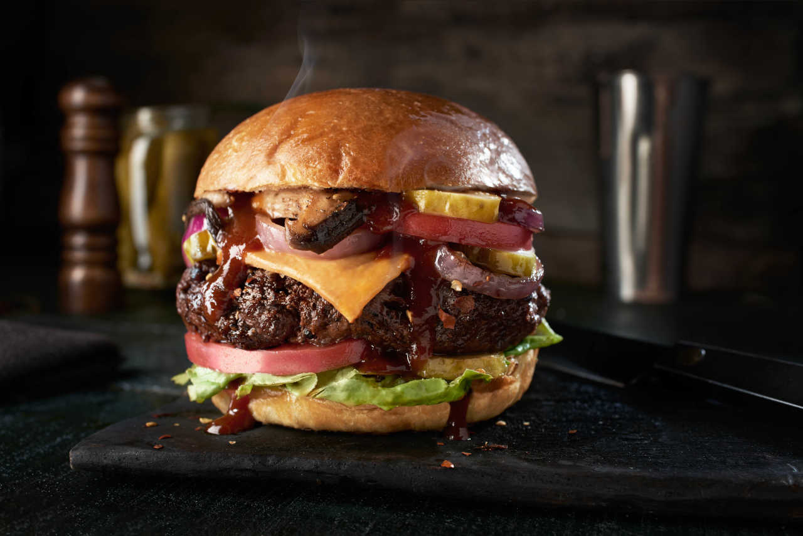

Description
Introducing the mouthwatering creation: a delicious hamburger packed with an exquisite combination of flavors.
Our carefully crafted burger starts with a juicy beef patty cooked to perfection.
Layered on top is a slice of melted cheese, adding a creamy and savory element to each bite.
The burger is then adorned with fresh, ripe tomatoes that bring a burst of tangy sweetness.
To balance the flavors, crisp lettuce leaves are nestled in, providing a refreshing and crunchy texture.
Adding a twist of smoky indulgence, we crown this masterpiece with crispy turkey bacon, cooked to a delectable crispness.
Finally, we elevate the taste profile with a generous helping of caramelized onions, their rich,
sweet notes adding a touch of complexity to every mouthful. Each bite of this tantalizing
hamburger is an explosion of flavors that will leave you craving more.
Ingredients
- Ground beef patty
- Salt and pepper to taste
- Tomatoes, sliced
- Cheese slices
- Pickles, sliced
- Lettuce leaves
- Turkey bacon slices
- Caramelized onions
- Hamburger buns
Instructions
- Preheat your grill or stovetop skillet.
- Season the ground beef patty with salt and pepper on both sides.
- Cook the patty on the grill or skillet over medium heat until desired doneness, usually 3-4 minutes per side for medium.
- During the last minute of cooking, place a cheese slice on top of the patty to melt.
- While the patty is cooking, cook the turkey bacon in a separate pan until crispy.
- Once the patty and bacon are done, set them aside.
- Lightly toast the hamburger buns on the grill or in a toaster.
- Assemble the hamburger by placing the cooked patty on the bottom bun.
- Top the patty with tomato slices, pickles, lettuce leaves, turkey bacon, and caramelized onions.
- Close the hamburger with the top bun and serve immediately.
Return to top
Return to main page